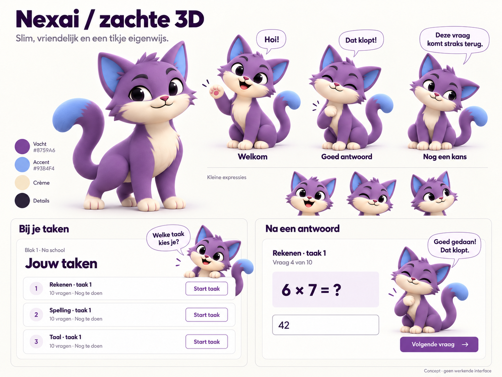

NEXAI · 2.5D · GOEDGEKEURDE MASTER V1
Hetzelfde maatje.
Een kleine begroeting.
De zachte uitstraling van optie 2, opgebouwd uit beweegbare illustratielagen. Bekijk zijn knipperende ogen en zwaai naast het oorspronkelijke concept.
01
Jouw gekozen richting
Het oorspronkelijke concept · optie 2


02
Nexai komt even tot leven
Gelaagde illustratie · 2,6 seconden
Hoi Adam! Welke taak kies je?
Klaar om af te spelen. Geen geluid.